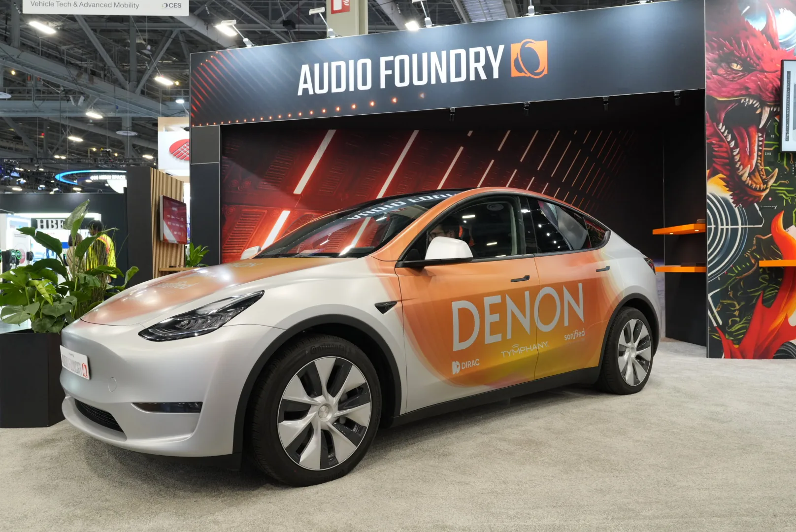
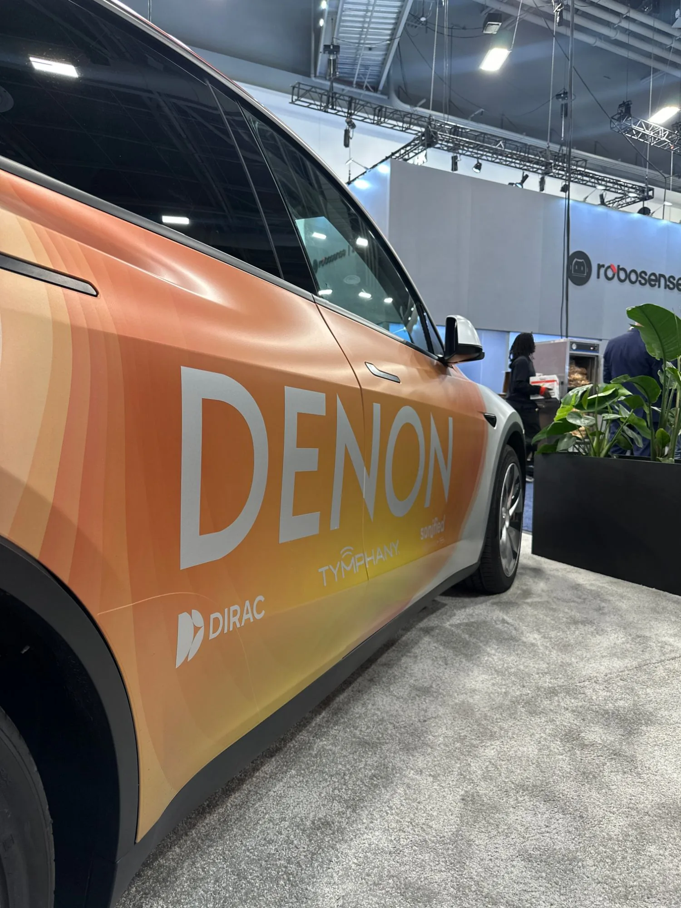
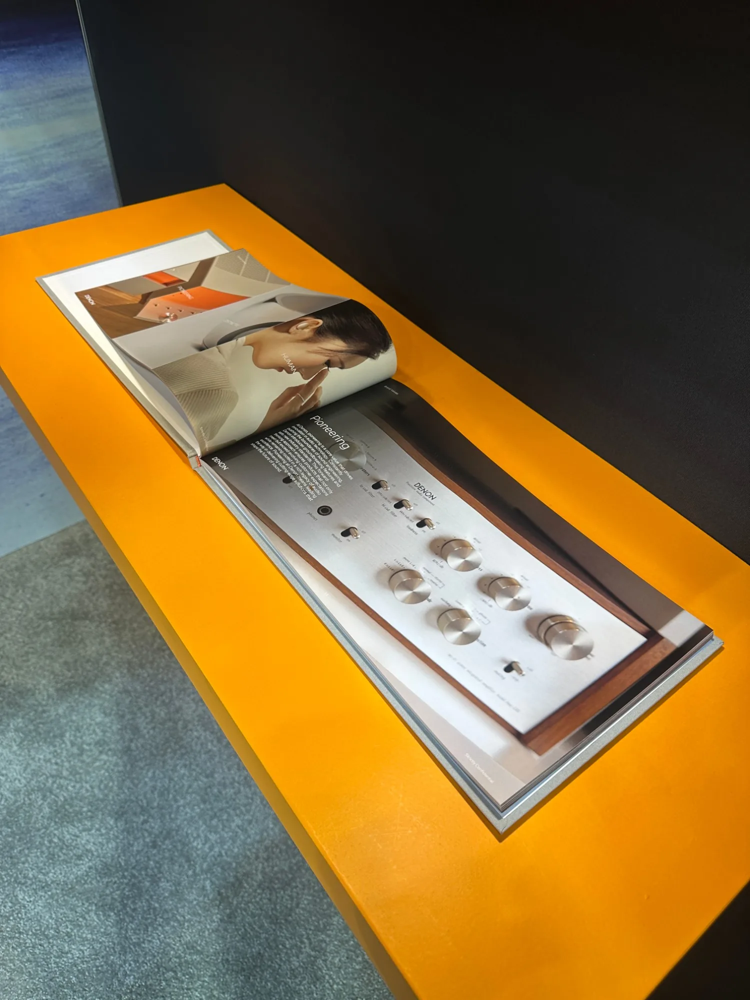
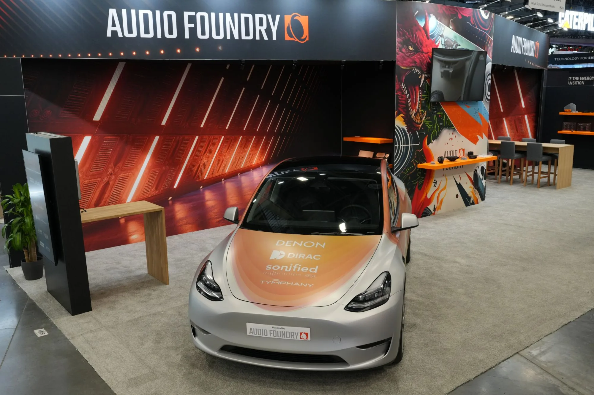
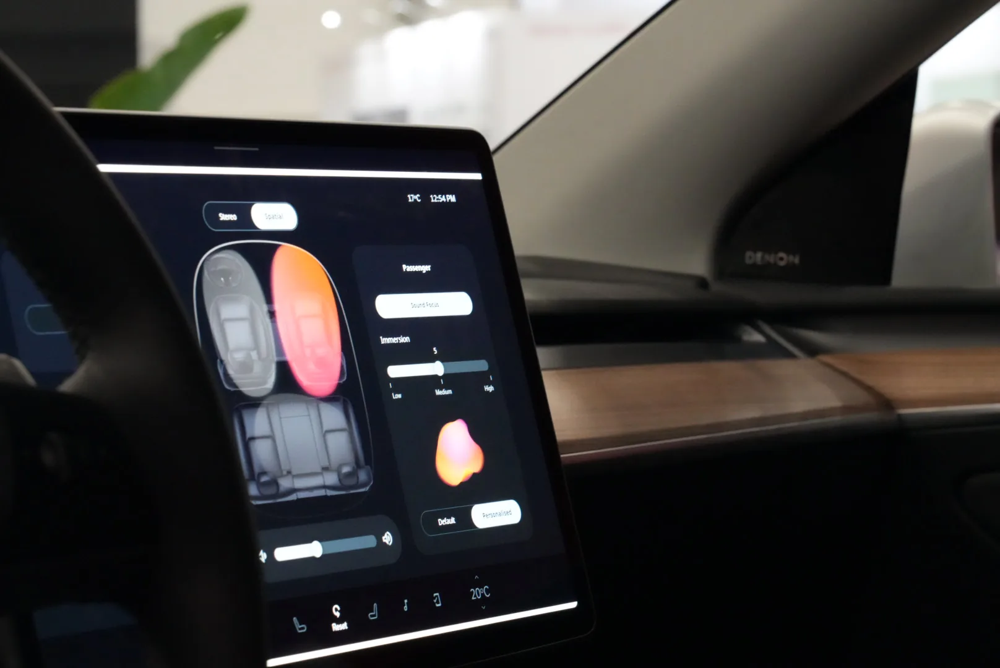
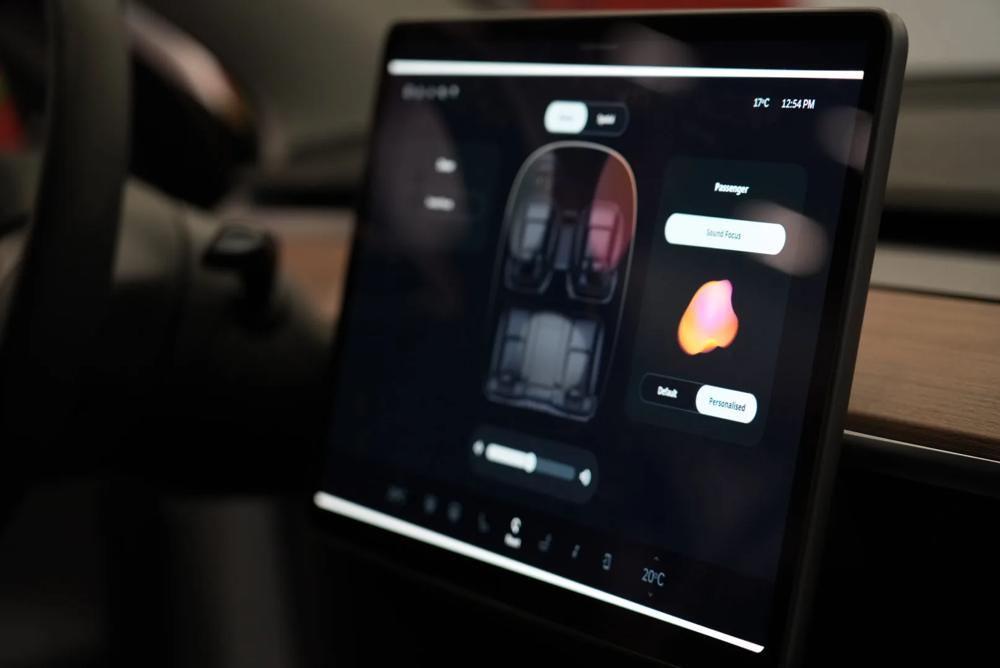
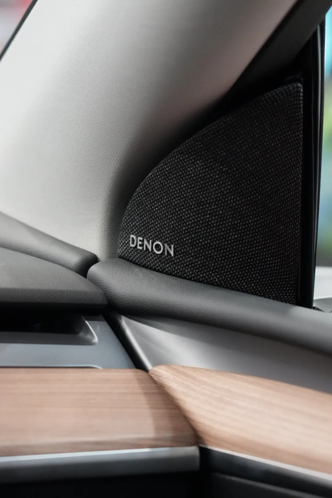

Digital experience
Vision for in-car user experience
In-car experience
Spatial sound, visualised
The primary screen gives driver and passenger individual control over their listening experience. Stereo and spatial modes are toggled from a shared top bar, while real-time audio visualisations — abstract, heat-mapped blobs — represent the sound field around each seat.
Default and personalised presets are surfaced as quick actions, so adjusting the sound takes a single tap — no menus, no buried settings.
Interactive prototype
Overview
Denon automotive UI
For CES 2025, we designed a new interface for Denon as a bold statement of intent — a premium audio brand reclaiming its place inside the car. The brief was open: imagine what in-car audio could look like if it were truly designed for the listener.
We focused on making something that felt alive — responding to the audio environment in real time, visualising sound spatially, and giving both driver and passenger meaningful control over their personal listening experience.
The team
- 1x Prototyping — hardware & integration
- 1x UI, UX, visual design, visual direction, animation (me)
- 1x Principal designer - Overall direction & planning
Out of car experience
Sound beyond the vehicle
CES visitors could experience Denon audio outside the car through a companion app. The app extended the in-car visual language — the same spatial visualisations, the same personalisation controls — but on a mobile screen, letting attendees carry the experience away from the demo vehicle.
This reinforced Denon's presence as a connected audio ecosystem rather than a single hardware install.

Animations
Motion tied to the music
New animations were created specifically for personalised sound — the audio visualisations breathe and shift in response to the sound field, making the abstract feel tangible. Each preset has its own character: the default state is calm and symmetrical; personalised modes introduce asymmetry and warmth.
The animations were designed to be smooth and fluid — never distracting while driving, but noticeable when you glance at the screen.
CES 2025 — Las Vegas
On the show floor
The concept ran live at the Audio Foundry booth — a wrapped Tesla Model Y carrying the Denon gradient, with the interface on the car's native display. Alongside it: Denon's brand book extending the same visual language into print.




Inside the car
The interface, live on the native display
Inside the demo vehicle, the concept ran on the car's own centre screen — spatial seat visualisation, per-passenger Sound Focus, immersion control and the personalised sound blob, all responding in real time. Denon speakers were installed throughout the cabin, tying the interface to the sound it controls.


